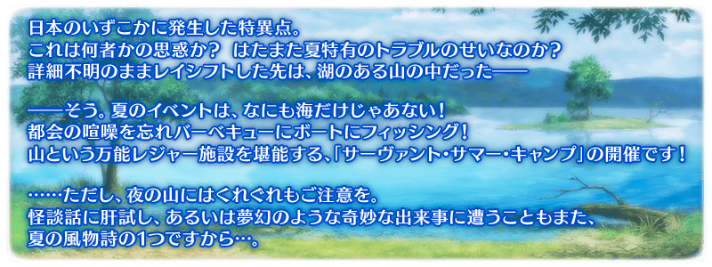

預定舉辦期間限定活動「從者夏令營！ ～迦勒底驚悚之夜～」！
為了消除發生的微小特異點而靈子轉移的面前，是綠意盎然的山中湖畔。查明在那遭遇的許多“奇怪事件”原因吧！
本活動中進行主線關卡的話，活動限定從者「★4(SR)虞美人(Lancer)」將以期間限定暫時加入。
更加推進主線關卡，讓「★4(SR)虞美人(Lancer)」正式加入吧！
※本頁面皆為開發中圖片。會有與實際圖片相異的情況。 ※一部份的關卡為日後開放。
◆活動舉辦期間◆
2020年8月17日(一) 17:00～9月7日(一) 11:59
◆活動參加條件◆
滿足以下條件的御主才能參加
・通過「特異點F 炎上汙染都市 冬木」
◆有關從者真名的注意◆
在2018年12月31日(二) 23:00以後新配信的主線故事及期間限定活動、一部份關卡、宣傳活動及召喚中，會顯示隱藏真名的對象從者真名。
※2018年12月31日(一) 22:59前已經配信的主線故事、復刻活動、一部份關卡中不在此限。
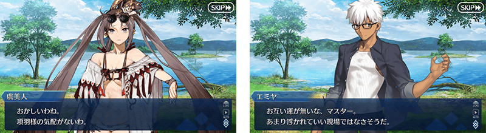
在「Fate/Grand Order」官方網站內首頁及Gallery，公開了期間限定活動「從者夏令營！ ～迦勒底驚悚之夜～」的電視廣告。
敬請確認。
※8月17日(月) 18:00影片修正 動畫製作：A-1 Pictures
※8月17日(一) 17:00圖片修正
 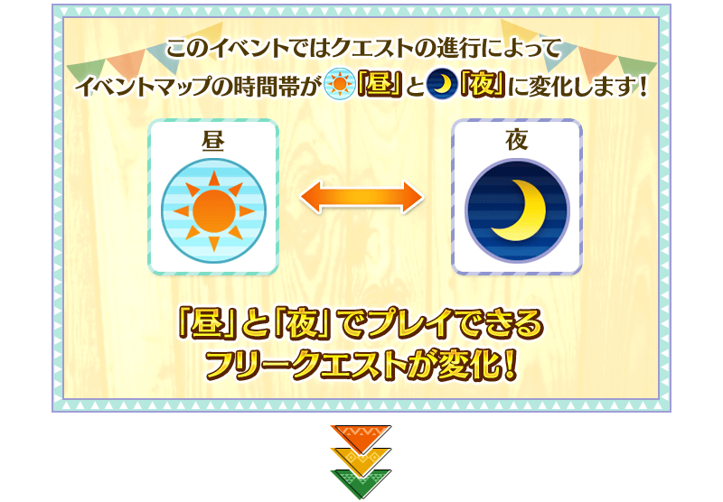
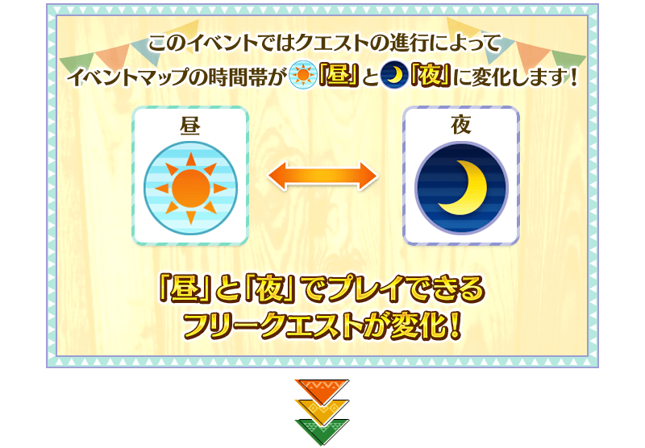
 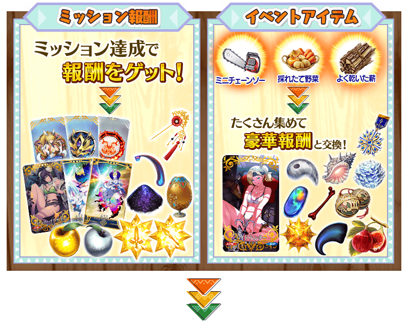
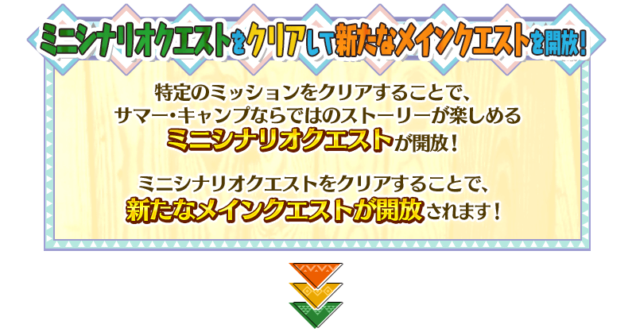
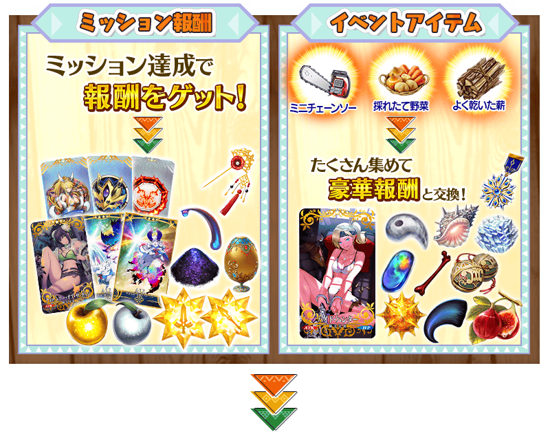
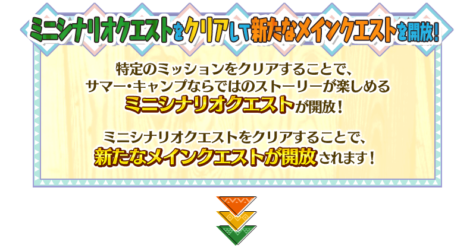

虞美人(Lancer)為日後正式加入！
通過日後追加的主線關卡後，期間限定從者「★4(SR)虞美人(Lancer)」將正式加入。
◆能正式加入時間◆
2020年8月24日(一) 19:00～
※請注意於活動開始初期階段開放的主線關卡結束階段不會正式加入。
享受劇情的主線關卡如下列行程表開放。
推進主線關卡的話，會開放收集活動道具的自由關卡。
之後的自由關卡，是靠通過主線關卡和自由關卡來開放。

◆關卡的舉辦期間◆
2020年8月17日(一) 17:00～9月7日(一) 11:59
【關卡開放行程表】
| 關卡開放時間 | 開放的關卡 | ||
|---|---|---|---|
| 2020年8月17日(一) | 17:00～ |
開場(オープニング) 主線關卡第一節 主線關卡第二節 |
|
| 19:00～ | |||
| 2020年8月18日(二) | 9:00～ | 主線關卡第三節 | |
| 19:00～ | |||
| 2020年8月19日(三) | 9:00～ | 主線關卡第四節 | |
| 19:00～ | |||
| 2020年8月20日(四) | 9:00～ | 主線關卡第五節 | |
| 19:00～ | |||
| 2020年8月21日(五) | 9:00～ | 主線關卡第六節 | |
| 19:00～ | |||
| 2020年8月22日(六) | 9:00～ | 主線關卡第七節 | |
| 19:00～ | |||
| 2020年8月23日(日) | 9:00～ |
主線關卡第八節 主線關卡第九節 |
|
| 19:00～ | |||
| 2020年8月24日(一) | 9:00～ |
主線關卡第十節 主線關卡第十一節 主線關卡最終節 |
|
| 19:00～ | |||
※無論哪個關卡都是在2020年9月7日(一) 11:59結束。
期間限定活動「從者夏令營！ ～迦勒底驚悚之夜～」的自由關卡中，會以低機率(25％)出現稀有敵人。
裝備活動限定概念禮裝「★5(SSR)チェーンソー・オブ・ザ・デッド」的話會讓稀有敵人出現率上升，1張上升15%，在合計裝備5張的情況，出現率可到100％。
期間限定活動「從者夏令營！ ～迦勒底驚悚之夜～」中，會發生達成「收集特定道具一定數以上」「擊倒特定的敵人」等各式各樣條件的話，可獲得豪華報酬的任務！
另外，對應任務的達成狀況會開放新的任務和主線關卡。
通過任務，邊獲得達成報酬邊推進主線關卡吧！
※請注意光滿足通過條件無法入手報酬。 ※請注意未領取任務報酬的話，不會開放新的任務等。
期間限定活動「從者夏令營！ ～迦勒底驚悚之夜～」限定的新魔術禮裝「迦勒底開拓者(カルデア・パスファインダー)」登場！
通過特定的主線關卡後，可入手新魔術禮裝「迦勒底開拓者」。
務必得到期間限定的貴重魔術禮裝吧！
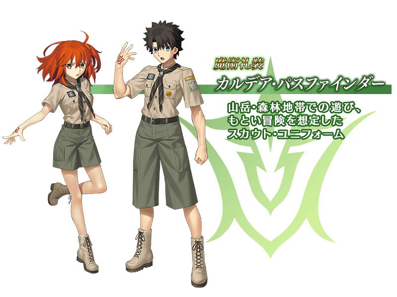
期間限定活動「從者夏令營！ ～迦勒底驚悚之夜～」中，可入手靈衣開放權做為特定關卡的通過報酬和活動道具交換。
能靠通過特定主線關卡入手的靈衣開放權
通過特定的主線關卡後，可入手「★3(R)瑪琇・基利艾拉特」的靈衣開放權！
想開放「★3(R)瑪琇・基利艾拉特」的靈衣「常夏的泳裝Ver.02(常夏の水着Ver.02)」的話，除了靈衣開放權外再加上必須滿足一些開放條件。
◆有關靈衣開放權的注意◆
※「★3(R)瑪琇・基利艾拉特」的靈衣開放權只限期間限定活動「從者夏令營！ ～迦勒底驚悚之夜～」的活動舉辦期間才能入手。
※「★3(R)瑪琇・基利艾拉特」的靈衣會配合外觀變化一部份語音。
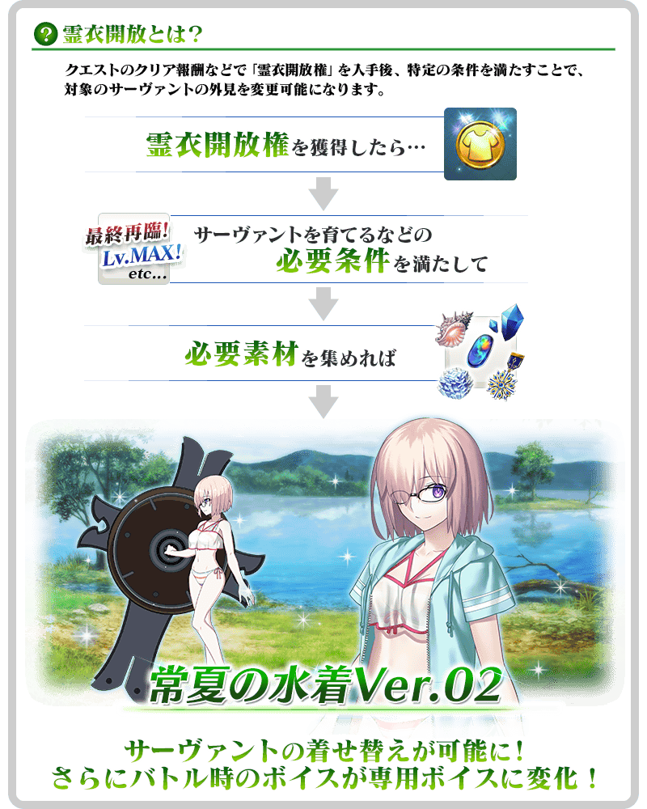

「靈衣開放」是自強化畫面進行。
※「★3(R)瑪琇・基利艾拉特」的靈衣「常夏的泳裝Ver.02」戰鬥角色不會身穿連帽衣。 ※「靈衣開放」後會自動切換戰鬥角色和圖示。若想回到「靈衣開放」前的狀態和變成其他再臨階段的情況，可自從者詳細畫面變更。 ※進行「靈衣開放」不會讓職階和能力等有所變化。
能在活動道具交換入手的靈衣開放權
可在活動道具交換入手「★5(SSR)西格魯德」「★4(SR)蘭陵王」「★4(SR)Emiya」的靈衣開放權！
想開放「★5(SSR)西格魯德」的靈衣「與吾之愛的回憶(我が愛との思い出)」、「★4(SR)蘭陵王」的靈衣「辨天衣」、「★4(SR)Emiya」的靈衣「夏日休閒(サマー・カジュアル)」的話，除了靈衣開放權外再加上必須滿足一些開放條件。
請注意未持有各靈衣開放權對象從者的情況，能入手靈衣開放權，但無法進行靈衣開放。
關於詳情請在此處的公告確認。 ※8月17日(一) 17:00修正
※8月24日(一) 17:00圖片修正 ※「★4(SR)蘭陵王」的靈衣「辨天衣」戰鬥角色不會戴眼鏡。
【8月17日(一) 17:00追記】
介紹開放靈衣「常夏的泳裝Ver.02」的「★3(R)瑪琇・基利艾拉特」寶具演出！
在「Fate/Grand Order」官方網站內的公告中，以影片公開寶具演出，敬請確認。
超值攻略方法・其1
本活動的期間中，強化「★4(SR)虞美人(Lancer)」時的獲得經驗值變成2倍。
是讓成為活動加成對象的「★4(SR)虞美人(Lancer)」等級一口氣上升的機會！
◆舉辦期間◆
2020年8月17日(一) 17:00～9月7日(一) 11:59
超值攻略方法・其2
本活動的期間中，下表的從者在活動關卡中會得到「自身的攻擊威力提升」與「絆點數獲得量提升」的加成！
強化對象從者，挑戰活動吧！
※活動加成的效果量因從者而異。 ※瑪琇・基利艾拉特的「絆點數獲得量提升」效果，是所謂「我方全體含候補的絆點數獲得量提升」的效果。支援時此效果無效。
※8月17日(一) 17:00圖片修正
【活動加成的效果與對象從者】
| 自身的攻擊威力 | 絆點數 獲得量 |
職階 | 稀有度 | 從者名 |
|---|---|---|---|---|
| ＋100% | 只限自身 ＋50% |
Lancer | ★★★★ | 虞美人 |
| MoonCancer | ★★★★★ | 殺生院祈荒 | ||
| Foreigner | ★★★★★ | 阿比蓋爾・威廉斯〔夏〕 | ||
| ＋50％ | 只限自身 ＋20% |
Saber | ★★★★★ | 西格魯德 |
| ★★★★ | 巴御前 | |||
| ★★★★ | 蘭陵王 | |||
| Archer | ★★★★ | 伊莉雅絲菲爾・馮・愛因茲貝倫 | ||
| ★★★★ | Emiya | |||
| Rider | ★★★★ | 紫式部 | ||
| Caster | ★★★★★ | 阿爾托莉亞・Caster | ||
| Berserker | ★★★★ | 布倫希爾德 | ||
| 我方全體 ＋5% |
Shielder | ★★★ | 瑪琇・基利艾拉特 | |
| ＋30％ | 只限自身 ＋20% |
Saber | ★★★★ | 葛飾北齋 |
| ★★★★ | 齊格飛 | |||
| ★★★★ | 女王梅芙 | |||
| ★★★★ | 弗蘭肯斯坦 | |||
| Archer | ★★★★★ | 阿爾托莉亞・潘德拉剛 | ||
| ★★★★★ | 貞德 | |||
| ★★★★ | 安妮・伯妮＆瑪莉・瑞德 | |||
| ★★★★ | 海倫娜・布拉瓦茨基 | |||
| ★★★★ | 刑部姬 | |||
| ★★★ | 威廉・泰爾 | |||
| ★★★ | 羅賓漢 | |||
| Lancer | ★★★★★ | 玉藻前 | ||
| ★★★★ | 茨木童子 | |||
| ★★★★ | 清姬 | |||
| ★★★★ | 謎之Alterego・Λ | |||
| ★★★★ | 源賴光 | |||
| Rider | ★★★★★ | 阿爾托莉亞・潘德拉剛〔Alter〕 | ||
| ★★★★ | 伊絲塔 | |||
| ★★★★ | 卡米拉 | |||
| ★★★★ | 莫德雷德 | |||
| ★★★ | 克里斯多福・哥倫布(反抗軍的Rider) | |||
| Caster | ★★★★★ | 尼祿・克勞狄烏斯 | ||
| ★★★★★ | 梅林 | |||
| ★★★★ | 吉爾伽美什 | |||
| ★★★★ | 瑪莉・安東尼 | |||
| ★★ | 漢斯・克里斯蒂安・安徒生 | |||
| Assassin | ★★★★ | 牛若丸 | ||
| ★★★★ | 沖田・J・總司 | |||
| ★★★★ | 虞美人 | |||
| ★★★★ | 斯卡哈 | |||
| ★★★★ | 尼托克里絲 | |||
| ★★★ | 風魔小太郎 | |||
| Berserker | ★★★★★ | 項羽 | ||
| ★★★★★ | 宮本武藏 | |||
| ★★★★ | 織田信長 | |||
| ★★★★ | 貞德〔Alter〕 | |||
| ★ | 斯巴達克斯 | |||
| Ruler | ★★★★★ | 阿爾托莉亞・潘德拉剛 | ||
| ★★★★★ | 始皇帝 | |||
| ★★★★ | 瑪爾大 | |||
| Avenger | ★★★★★ | 巖窟王 | ||
| MoonCancer | ★★★★★ | BB | ||
| Foreigner | ★★★★ | 謎之女主角XX |
※8月24日(一) 17:00修正 ※就算成為對象從者，也會有不在本活動的主線劇情登場的情況。 ※自8月14日(五) 17:00在從者選擇畫面和從者強化畫面等，追加活動加成篩選器。由於是只顯示於活動活躍從者的便利功能，敬請活用。
超值攻略方法・其3
裝備活動限定概念禮裝與期間限定概念禮裝的話，在活動中會受到各式各樣的恩惠。
裝備活動限定概念禮裝後稀有敵人的出現率和自身的攻擊的威力提升！
裝備可靠活動任務報酬入手的活動限定概念禮裝「★5(SSR)チェーンソー・オブ・ザ・デッド」的話，在關卡以低機率出現的稀有敵人出現率會提升15％。
另外，裝備可靠活動道具交換入手的活動限定概念禮裝「★5(SSR)ハイド・ハンター」的話，在期間限定活動「從者夏令營！ ～迦勒底驚悚之夜～」活動關卡中會提升自身的攻擊威力。
※請注意就算於各關卡的稀有敵人出現率顯示100％以上的情況，實際的出現率仍是100％。
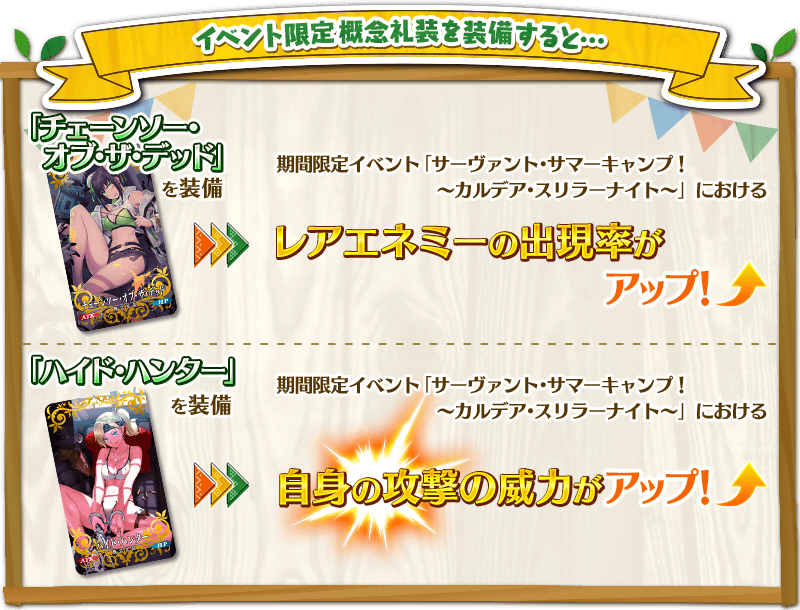
超值攻略方法・其4
裝備期間限定概念禮裝會提升活動道具的掉落獲得數！
裝備聖晶石召喚Pick Up的期間限定概念禮裝「★5(SSR)ハニー・レイク」「★5(SSR)イノセント・ブルー」「★4(SR)ハッピー☆ドライブ」「★4(SR)クライミング・戰鬥」「★3(R)ホラー・コンシェルジュ」「★3(R)マブダチ・バーベキュー」的話，會提升活動道具「迷你電鋸」「現採蔬菜」「極燥柴火」各自的掉落獲得數提升。
※請注意各關卡的道具掉落率並非100％。
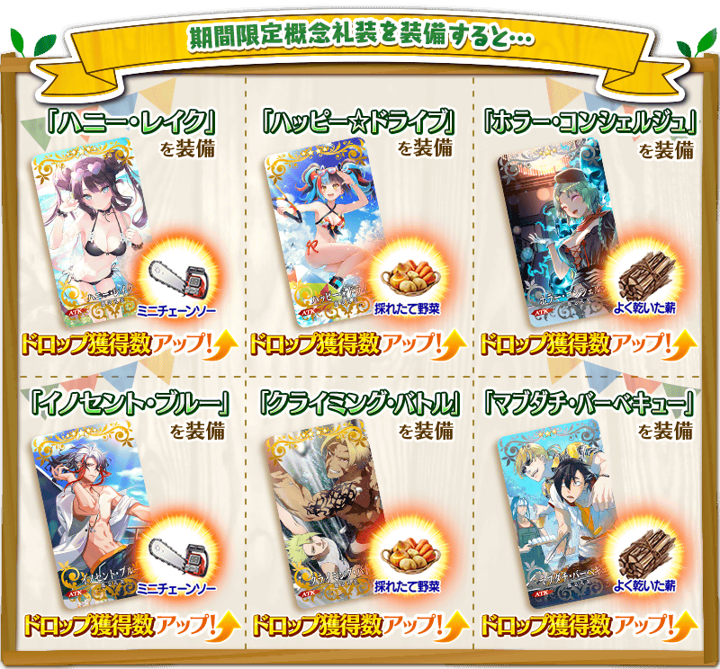

|
★★★★★SSR |
| 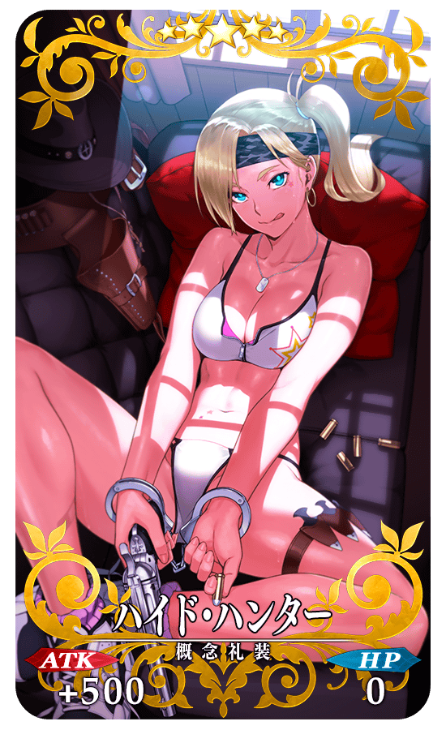 |
★★★★★SSR |
| 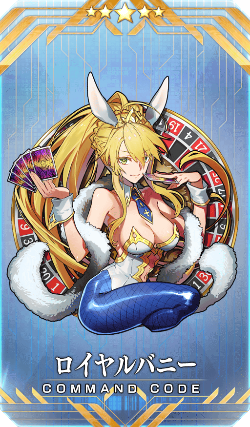 |
【活動限定】 |

|
★★★★SR |

|
★★★R |
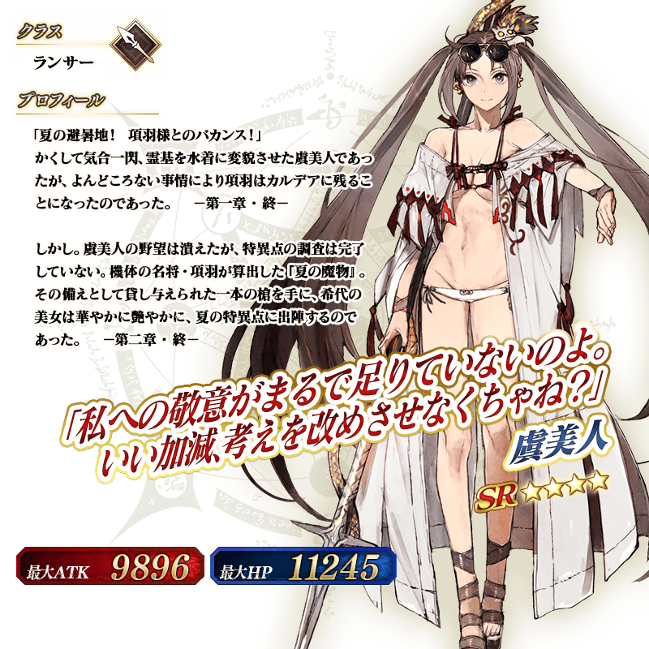
◆靈基再臨◆
使用能靠活動任務報酬入手的「虞美人草的髪飾(虞美人草の髪飾り)」，重複4次靈基再臨的話，卡面會有所變化！
※「★4(SR)虞美人(Lancer)」不會隨靈基再臨使戰鬥角色的外觀變化。

【8月17日(一) 17:00追記】
介紹「★4(SR)虞美人(Lancer)」的寶具演出！
在「Fate/Grand Order」官方網站內的公告中，以影片公開寶具演出，敬請確認。
活動道具可自點擊管理室(ターミナル)畫面右上「活動報酬」鍵所顯示的「活動道具交換」畫面，交換以下的道具。
※關於英靈結晶・流星之芙芙ALL★4(HP)、英靈結晶・日輪之芙芙ALL★4(ATK)，進行在8月24日(一)開放的本活動進行後才能交換。
◆交換期間◆
2020年8月17日(一) 17:00～9月14日(一) 11:59
※活動道具交換期間結束後「迷你電鋸」「現採蔬菜」「極燥柴火」會消失。
◆能用迷你電鋸交換的道具◆
|
【活動限定概念禮裝】 【靈衣開放權】 【技能強化＆靈基再臨素材】 【靈基再臨素材】 【其他道具】 |
◆能用現採蔬菜交換的道具◆
|
【活動限定概念禮裝】 【靈衣開放權】 【技能強化＆靈基再臨素材】 【靈基再臨素材】 【其他道具】 |
◆能用極燥柴火交換的道具◆
 |
【活動限定概念禮裝】 【靈衣開放權】 【技能強化＆靈基再臨素材】 【其他道具】 |
【8月17日(一) 17:00追記】
翻新「★2(UC)漢斯・克里斯蒂安・安徒生」的戰鬥動作及寶具演出！
在「Fate/Grand Order」官方網站內的公告中，以影片公開寶具演出，敬請確認。
◆翻新實施時間◆
2020年8月17日(一) 17:00～
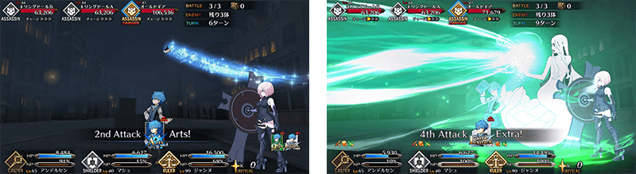
【8月17日(一) 17:00追記】
強化「★5(SSR)西格魯德」的特別關卡「從者強化關卡」，在迦勒底之門永久追加。
不僅進行對象從者的強化，也可獲得聖晶石做為關卡通過報酬。
※請注意在從者強化關卡沒有文字冒險部份。
◆追加時間◆
2020年8月17日(一) 17:00～
◆開放條件◆
持有的強化對象從者，必須使其最終再臨。
※未持有對象從者的話，不會出現關卡。
※關卡沒有舉辦期限。
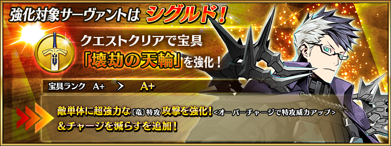
【8月17日(一) 17:00追記】
其他還有，期間限定「從者夏令營！Pick Up1召喚(每日交替)」和期間限定「從者夏令營！Pick Up男性召喚(每日交替)」同時舉辦！
關於詳情，請自下述橫幅確認。
■「從者夏令營！Pick Up1召喚(每日交替)」詳細情報

■「從者夏令營！Pick Up男性召喚(每日交替)」詳細情報